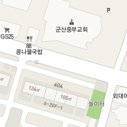
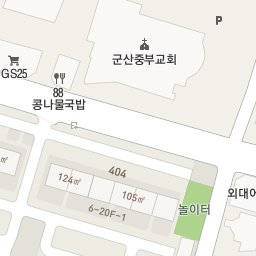
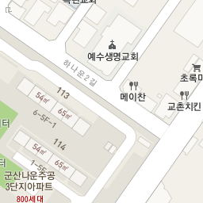
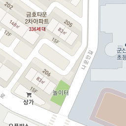
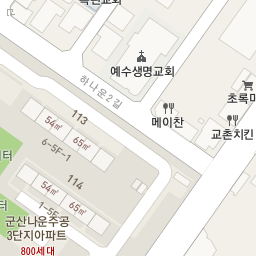
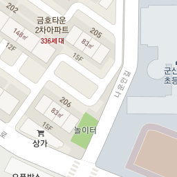
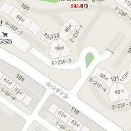
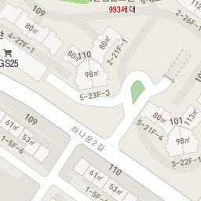
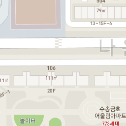
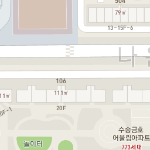

.png) 
.png) 
.png) 
.png) 
화양양꼬치
딸부자네통닭
와플반트
육대장군산시청점
김현진과자점
어울림
이순신장군갈비
착한백반
멕시칸치킨
바다뜰한식마을
153부대찌개
멕시칸치킨
수배로스
옛날팥죽
마코토회전초밥
장인족발
땡초먹고맴맴
파스토
산수촌
가빈이네
생뚝
신우식당
크로바
상고앞분식
99씨엘
총각네수산
낭만가비
포차어게인
24시전주명가콩나물국밥군산수송점
커피하우스
두끼군산점
들녘
현대옥나운동삼성아파트점
에이비씨커피
서수반점
초가마루
호박터
청해루
경일옻닭
민들레국수
본뼈
강여사족발
모임실비포차
군산순대국밥
커피마을아몬드아저씨
꽃보다소
탁류길서리
다옴
석호수산식당
시골막국수
1974연탄시절
청기와아구
쿤밍
개성집
더정겨운
명동소바
88콩나물국밥
포세이돈
이삭분식
러브발렌타인
파이맘
일흥정육식당
바다회집현대코아점
아프리카커피가게
길포차
논두렁쌈밥
원빈니치커피하우스
다사랑치킨피자호프나운점
삿갓다방
오랑게
다사랑치킨피자호프수송점
이화식당
세월촌
보물섬자연산횟집
카페아르
동보성
하모니카
다사랑치킨피자대명점
밥심도시락
더칸
황금어장
송송
아빠통닭
명궁칼국수
군산촌닭
청춘감성쌀핫도그
산천장어
한실골
오떡
서소문소바
보배밥상
커피브라운
밥
고향식당
봉달
애돈가
미스사이공
동네방네
남원성
음악이야기
장어골숯불구이
남도아구
오성황제해물짬뽕
셰프의선물베이커리
피자마루조촌점
아빠애족발
군산해물찜
장수식당
일신옥
돼지촌
정이가
밀마당
한끼맛있다
대박부대찌개
돌풍식당
더한잔
수요일
군산부대찌개
테트리스찜닭

신신불닭발
대야장터국밥
커피베이군산여상점
바베츄
르빵메종
감탄
제일식당
장안통아귀찜
돈방석숯불갈비
형제갈치
원조머슴집
소담순대
카페아몬드
김밥집이다
9292뒷고기
명인
도토리식당
생생맛족
일품명가
1박2일
술푸마
연어이야기
육회총각
맛있는술집미술관
도가니탕전문점숙경
찻집은
낙원볼태기
하버브릿지커피숍
옛날손짜장
소주한잔
소달구지곱창막창
솥뚜껑일번지
빵장수야곱
호아네김밥만두
소담
은아반점
휴
티바두마리치킨
라온제나
웰빙밥상
가연
이진표베이커리
군산한식뷔페
그랜드녹두팥칼국수
전주감자탕
시골집칼국수
튀김떡볶이순대&딜리버리
태성각
바다애향기
동이트는집
번지농장돌판아구찜
스마일분식
시골통닭
서해명태식당
마왕족발
청년다방
큰집닭강정
공휴일
그리움한잔
다온
황금족발
다래횟집
해오름회집
카페카사비앙카
수라간
밥짓는부엌
리가든
와와치킨호프
바비후
신촌돈가스
신고궁한정식
더블미
그린달빛
와라횟집
이소곰탕
미도리부대찌개
완산골전주콩나물국밥&피순대
서당골우렁쌈밥청국장전문점
카페라시에스타
웅이집
다원각
군산중화요리
다다원
냠냠이유식
임정원
후라이드참잘하는집
아줌마순대국밥
한낱
최종희부뚜막
올미
피자나라치킨공주
메카닉
타이
군산식도락
양푼왕갈비
주민네가게
맛남
인테이블
군산해장국
카페반짝반짝빛나는
꽃잎카페
카페인앤아웃
카페안셀프스튜디오하루
카페남다른
정스돈까스
벨로마노
코코반점
달보드레
제주미풍해장국
치킨이남달라
롯데리아
포아이니
으뜸족발
커피에빠진호떡
군산김치칼국수
서울소바
지호식당
군산짬뽕
한소끔
이슬처럼
하버브릿지
마태
두식이
월미당
인디무드
대중양품
신짱
동백집
던킨도너츠
군산불냉면&연탄고기
정담순대
돼랑이곱창삼겹살
뮤즈
한뚝수육국밥
골든글로리
엔제이푸드
달이토스트생과일
야미마라탕
퐁당퐁당
객주포차
분식당
이가매생이수제비칼국수
우리집곰탕
이화네갈비찜
달달쭈봉
쫑구항아리짬뽕
경춘면옥
은아수
920
달빛창가에서
영산포
불칸
풀하우스식당
만원족발
빠끄커피
푸라닭
현대카페
양푸니
태산실내마차
포엠커피
해바라기
육사심
슈퍼떡볶킹
황가네
커피나무
스테이블
가람갈비
대로식당
영화짜장면집
오니라
맛있는한끼
모던청와
맛나다한끼
우리식당
미룡가마솥설렁탕
친구
해바라기분식&식당
장미맨숀
맛있는우리지빱
리투스카페
산들양푼갈비
송가짬뽕
굳돈
지곡동옛날돈까스
리리프
단초밥
소담촌
미라식당
소곰집
민들레한식뷔페
라떼떼
르빠니에
장어만
구구족발
장인족발
구운통닭
09옛치킨
우체통찰보리칼국수
꺼구리시장통닭
탱크조개&짬뽕
참꼬마김밥&분식
피자플래넷
카페로더
군산통닭
읍내생맥주
오복통닭
일미리금계찜닭
앵두나무
디저트풍경
명랑부대찌개
과일아쥬스해
정성김밥
감동샤브
낙원정갈비
양과점1925
청산횟집
줌인면사무소
비당국수
산전수전
골목
우리밥상
큰들카페
홍짜장
진수곱창
촌댁
로즈가든
양파전
자매식당
미미식당
두리식당
이사부중화요리전문점
경양식돈까스
서동족발
탕화쿵푸마라탕
명가람갈비
본빠네
골목길가든
웰빙쌈밥
고기에마음을담다
정이가
다복한밥상
호원대북경
술집이다
행복한할머니밥상
한가로이
시골옻닭
치킨매니아
마실호프
고방골오리
포이제
순돌이네통닭집
문화치킨
돌머리집
마실
족발명가
소룡동까페소곤소곤
진미양꼬치
방자고기
쉴만한물가
부자식당
대통령짬뽕
옥희네칼국수
돼지가바람났네족발
또와정육식당
김치이야기
얼큰이칼국수
선
은성복집
벤치타임
어부네포차
돌돌이꼬마김밥
카페마실
원조소문난집
찜탕명가
정식당
허선생짬뽕
하얀섬
황해짬뽕집
풍년식당
포아이니
스위트커피
장수해장국
놀부집
라루나
베이비파파
미담
빵떡아찌
올드브릭
허갈닭강정
밥카페
다인소반
서해식당
메이드인태리
어여와
느림보제빵소
군산불곱창
새우에반한족발
차더하기
상평까페
럭키마케트
술도가
인생술집
또오리
마녀생맥주
사월
도도랑
하얀코끼리
수복
종로맥가
카페마니
신날개
군산원감자탕
더팡
서래포구마을
솔보
무연마라탕
둥지분식
장땡활어도매센터
머시기수산회포차
연초밥
심콩
윤씨네해장국
지곡동
빵바구니
신풍참숯양꼬치
만두한판
그리고
삼촌네
누렁소까망돼지
당골
우리식당
유유
거목식당
닭스토리
황태후
돈두구이
차뜨락
군산한우한돈정육식당
일러스트까페
더꼬치다
해와달
메리그린
미가옥
엠에스씨
서원반점
김마리
추억촌
노아카페
단호프
미미집
배달떡볶이
기와집
사계절꽃게
동대전횟집
싸다구이
닭발하우스
카페캔디
어장어
바른초밥
컨츄리맨커피
봉이네왕족발
그냥분식
스시맨
가장맛있는미니족
꽃보다초밥
골목식당
유명빵집
카페로컬
성일분식
1인자24시감자탕뼈해장국
청춘연어
꼬치닭
백곰다방
열정국밥
올리브
메리그레이스
금암통닭식당
요마이거트
모이
메인소주방
몰토커피
엔엔엔씨커피랩
단아한푸드
논
군산아구세상
우리할매떡볶이
군산주막
스카이라운지파르베
무지개식당
마라공방
천사카롱
운수대통
태리로제떡볶이
다온아구
다원해
신민회
한스델리
해,바람
또봄
쉐프테라스
금강우렁쌈밥
풍미중화요리
벼락금돼지
신흥대패
복덕빵
지니분식
하루초밥
몬주익
다아페
봉자
일루와
한비하우스
두부반장
푸르던
인생닭강정
요리가정겨운집
샘골전주식당
세상에없던갈비
혁이네엄마칼국수
가든바베큐
새맛뜰
등촌샤브칼국수
미룡동커피
삼동소바
지운식당
김밥나라
덕성루
투다리
북경반점
영빈각
거사리매운탕
옛날짜장
베테랑생돈까스앤커피
대박
뚱보식당
취향반점
코아식당
항구식당
하늘마루
소룡반점
마들김밥
서흥회관
김밥천국
옛날왕만두
이화분식
묵은지감자탕
맛고을식당
광주순대
고향가든
휴
세운성
명성반점
나그네야식
명정장어구이
삼각지
진나루해장국
들마루
명태찜마을
신영떡집
용해장
연정가든
카스톡스
용궁반점
대야한우농장식당
장터팥칼국수
우리들분식
정주식당
미소한우식당
성일식당
서진해물곱돌솥밥
한우마을
경포식당
발산식당
깐치뎅이
해성식당
고향식당
천광참게
바우향
만남치킨
군산칼국수
구암국밥
향촌국수
뽕나무집
왕뚜껑생삼겹살
영하우스
태백원
불타는명태찜
캠퍼스식당
1박2일
훈이네
대학로맛고기식당
양자강해물짬뽕
우정반점
명산옥
별미백반생선탕
파랑돔횟집
토실배기
별미콩나물국밥
중앙식당
콩마을
해피투게더
청나라
도싯골
시골부뚜막
두레반
에비뉴
아리랑
커피아일랜드
리에또쿠치나
본도시락
콩뜰
진수성찬
초가마루
원조식당
장터분식
삼은갈비
곰돌이네
소룡맛집
예향수산
보석정
그린반점
엄마손칼국수
객잔
정석통바베큐족구이
선제통닭
왕궁해물칼국수
대인식당
삼거리식당
북경반점
대정소바
철따라맛따라
제일식당
일풍식당
군일분식
뚜껑
중동칼국수
장원순대
하제방파제회집
명동국수
길거리야
햇살마루청둥오리
학교종이땡땡땡바지락손칼국수
청담즉석숯불장어구이
홍윤베이커리
경원상회
봉이네맛집
소영생고깃간
유명순대국밥
터미널분식
신우식당2호점소머리국밥
수송반점
황가네통닭
왕서방
동원분식
희락
장터국수
천리향
오병이어
나무
명승지
예닮가
싱글앤싱글
치킨하우스
자매식당
와!갈비
영빈각
영신옥
돼지코생곱창갈비
미림
새만금횟집
향다방
참대박
중동연탄구이
원조남원옥
진미통닭
장국명가
피자굼터
옥류관
하바드치킨
선미집
유유카페
본가
레트로키친
푸른가든
흑룡각
우리떡갈비
고래면옥
시골순대
역전야식
명가해장국
바나나팩토리
코오롱가든
하루오뎅
국수리아
대중이네
또와김밥
커플토스트
또리분식
가야궁영미네홍탁
팔팔삼계탕
청석골
현대페리카나통닭
소룡보신옥
백년식당
김밥잔치
부부식당
한씨네대가추어탕
몽실정
부안바지락칼국수
시골식당
장날숯불화로구이
진원식당
성환식당
호동이네맛집
처가집한방옻닭오리
경포천장어
부자회집
형제반점
실비돼지갈비
다향
고향
대원회관
국수나무
이레베이커리
즐겨찾기
더블유바리스타
차이홍
기억나눔커피
산북우돈가
명산양푼왕갈비
소라아구복
가나순대
대명명태찜
흥원칡냉면
부활냉면
군산한우촌
어은동장어집
임실치즈피자
제이제이
밥먹고힘내자
보리네홍어마을
새맛뜰
평강채
먹촌해장국
유가네식당
압구정양푼갈비
꼬꼬꽥꽥
카페디레마
진안팥칼국수
힘솟는짱어
군산커피가게
탄탄대로
닭촌
산동성
로뎀푸드
구어조은닭
전주우족설렁탕
와인수제돈까스
물빛마을
미도리
핑크츄러스by핑크커피
키친후가
튼튼맘마
센스
우진정육상회
생생오리
짠
아리울생선탕
엄마손팥칼국수
대박짜장
최가네식당
아오미복집
돈부리야
끼니와새참
월플라워&스위트
지나의커피
정담떡방
진장어
만찬식당
자갈마당
미가실비횟집
취향각
레드햇49-5
와방터
미영이네
유생촌
경포천추어탕
아리가또맘마
제일원
진향
진미식당
청향
자금성
참새방앗간분식
틈
종가집생선구이
지연이네맛집
카페루앤비
옛날막창
굴나라칼국수
오리일번지
이매진
디디치킨
또치네삼겹살
베이징
옥천왕족발
성연분식
오성산생삼겹
하이브런치
쌍둥이네가맥
카페긱
이모네연탄구이
깜도야
화덕쟁이
비행장매운탕
태성반점
김가네장어
밤새우리
음식나라
늘해랑
하이벳수산
대가식당
풍미정
고기고기또고기
두두치킨
아귀자리
나누리추어탕
구이가
엄마손식당
도우리아나구
제일각
까미노
연화구
돈치킨
서우식당
강촌마을
청하순대
경원아나고
손맛칼국수
가정팥칼국수
곱창주세요
국수미는남자
궁중왕족발
금강산아나고
다다치킨
꿀꿀이곱창
대방촌
로객정
또또생곱창
렉시
만나분식
막내식당
명산칼국수
멕시카나치킨
밀타운
사계절칼국수
바이킹
뽀빠이감자탕
서해아구
선창아구
세풍식당
솔라그라티아
수원본석갈비
서민옥
수정식당
옹기마을손칼국수
올레곱창
우미네
원곱창
우가
우일아구찜
웅스커피
일력생선
짬뽕일번지
자매순대
주안상
청솔로스
커피볶는집
파랑새
커피나무
하비섬
커피내리는집
행복한식당
홍익돈까스
사쿠라
김밥짱
옹고집쌈밥
홍천루
왕고래족발
홍콩반점
마님맛집
중동호떡
송강식당
원조설렁탕
일월부대찌개
옛날팥죽
빵굽는오남매
진포투옛날통닭
쌍용반점
장터족발
빈해원
일흥옥
대야회집
유정초밥
명월갈비
㈜이성당
계곡가든
장미칼국수
원조뽀빠이냉면
송반장
만두여행예스트점
예가명태찜
박경규웰빙항아리보쌈
도담한우
또복이닭강정
김형제고기의철학
골목집
공주네
한남생고깃간
서해칼국수
신이해물포차
착한가맥
소풍김밥
청사초롱
자금성
창성양꼬치
처갓집양념치킨
이웃집소녀떡볶이
은파세꼬시
두부명가
아찌네
트리플크라운
원풍갈비
칸꼬치구이
새우랑소바랑
한우한돈일번지
군산일식
찜하우스
꿀밥
꽃순정
노루이자카야
함흥관
티티카카
정인닭
홍춘천
1958김여사
해물천하
소나기
영동카페
에이비씨커피
최성광참숯불닭갈비
마실
달봉이네
칼맛
생고기육회
락푸드
올리브
명동면옥
경성함바그
평양면옥
강식당
1도씨맥주산북숙성고
뜰안에정원
춘천닭갈비
미가도
팥죽명가
통큰식당
샬롬카페
죽고을
푸드라이프
국수와뚝비
대명참숯불구이
철길마을분식
팔팔산꼼장어
미스터코다리
쉼터분식
오늘통닭
빵굽는마을
라비
살라타
콩불
땅개촌
불향낙지
분식시간
금강매운탕
거목
전원마을돌솥쌈밥
옹고집쌈밥
사랑방통닭
상하이반점
찜마을이야기
경기횟집
명가떡집
신포우리만두
군산뷔페일품
왕십리진곱창
강천연탄구이
최동민양푼갈비
나포통닭
준스시
옛날수제튀김&김밥
가맥먹태촌
하늘바람팜스토랑
낙지힘낙지
명품뒷고기
엄마밥상
군산이름난해물칼국수
훌랄라바베큐치킨
청담동말자싸롱산북점
참사랑명태찜
콤마
즐겨찾기
이디야커피
하구식당
동부치킨하우스
돼지우리
우사랑
옥구소머리국밥
김밥천국
숙이네김밥
토속촌닭백숙
이레식당
맛나식당
오늘만
부산세꼬시
뮤직포유
빵굽는오남매
교동짬뽕
청년미각
시골토종순대
김밥천국
곱창과저팔계
오투호프
우정명태
부대장낙곱새
아무르베이커리
하버브릿지
옹다방
심야식당
고군산활어
나포순대
솜리치킨
일번지K양푼갈비
옛맛김치찌개
20m